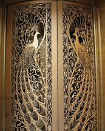
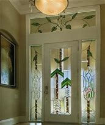

pag principal


estas son las mejores puertas echas por los mejores herreros de la comunidad y las mas lujosas del mundo la primera fue
enviada a francia y la segunda fue enviada a los angeles california son las puertas mas vendidas asta que uno
de nuestros trabajadores decidio investigar y logro ela borar una nueva puerta que ya a logrado tener mayor exito que las dos primeras